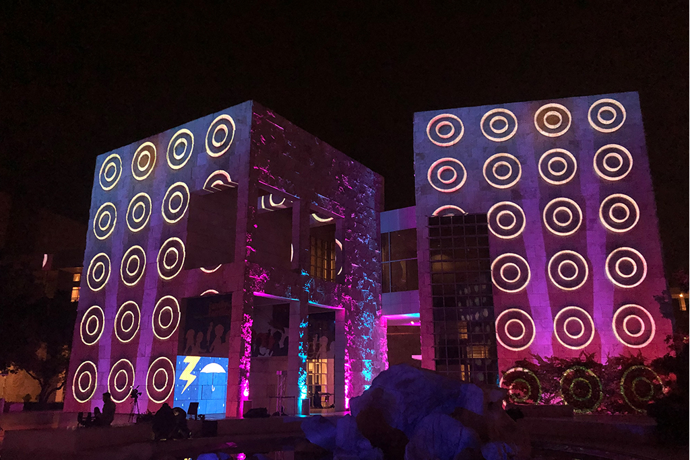
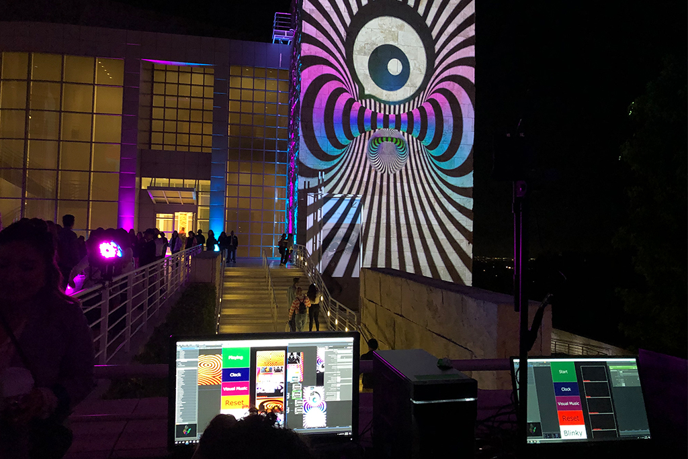
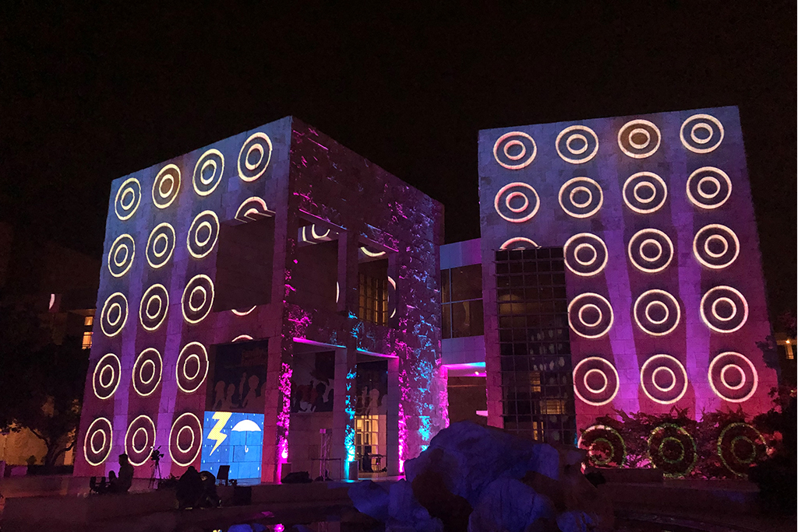
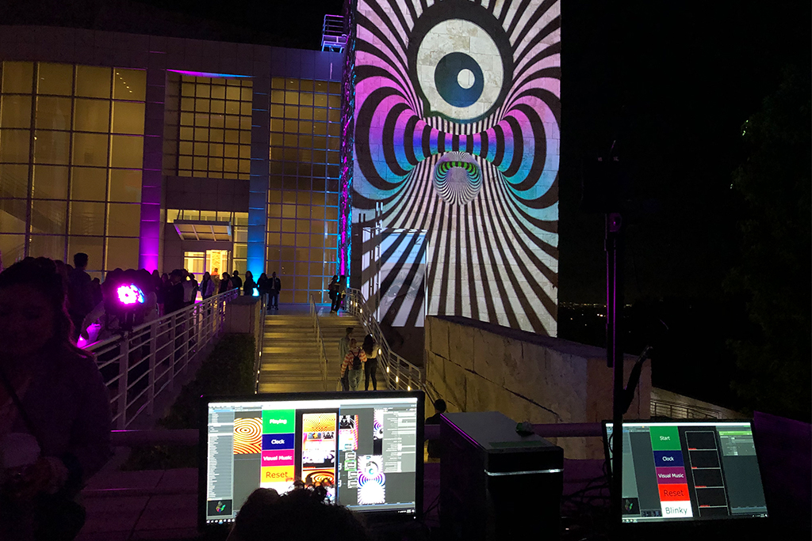

Getty UnShuttered is an annual Immersive Projection Exhibit Directed and Curated By Mike Patterson and Candace Reckinger with over 3000 attendees. We use projection mapping in more than 10 buildings and a rock fountain at The Getty Unshuttered to bring the Museum to live in a night full of music and color.
At the core of the Getty Unshuttered event is the work young photographers that are featured in a rotating gallery show inside the Getty Center with an exhibit that las edition was open to the public for more than 6 months.
I was brought to the Getty Unshuttered Project to design and implement the projection mapping and file system playing a fully in Sync event across five main buildings. I also created dynamic and colorful 3D animations that could be projected projected on the rocks and buildings of the Getty center.
Adittionally, in close collaboration with Erik Bertelloti, Head of Interpretive Content and Jill Moniz, curator of the exhibit, I built and deployed the projection mapping system used in the gallery show at the center of the Getty Unshuttered 2019.
Working as an animator for a projection mapping project and the Getty Unshuttered in particular is one of my favorite design challenges. The Getty buildings are perfect slates for projection mapping.
The topics behind each UnShuttered show are always uplifting and positive. This works perfectly for Projection Mapping animation as, as a general rule, bright colors and high contrast works better on projection mapping to create a full illusion.
In general, the motion graphics animations, are not the main component of the projection. That place belong to the photographs of the young artists. However, the motion graphics serve as both background and transition between photograph showcases, and are the ones that dictate the general mood and topic of the show.
Based on the requirements of the UnShuttered show and my own experience designing animation for projection mapping, I followed a set of simple rules while creating the content:
This calls for an animation that is Bright and Colorful. That mixed with
Bright Colors, High Contrast to Hide Buildings and highlight the illusion
3D animation to create the illusion of dimensionality and Depth.
The Getty Unshuttered II show was designed as big visual music immersive piece, that meant the projection mapping system needed to be optimized to run 5 videos in High Definition in absolute synch through five 14K projectors.
The system, designed in Touchdesigner in collaboration with Jordan Halsey and Shaoyu Su, ran both video and audio and was created synching 2 computers through NDI. One computer had 3 outputs to the projectors pointed to the posterior buildings of the Getty Center, while the other had 2 outputs connected to the projectors pointed to the rotunda building. Previous to the show, the projection mapping system was tested in a model to scale of the Getty Center buildings.
Additionally, to showcase even more work of the artists and the "selfie spots": videos designed to work as dynamic selfie backgrounds, there were Brighhtsign players across the whole center connected to smaller 6K projectors.
As mentioned earlier, the core of the Getty Unshuttered event, is the photography work created by the young artists that every year join the program. Before 2019, the photographs had been showcased in traditional gallery setup, with photos printed on frames and exhibited for around two months in the Getty Center.
After the success of the Getty Unshuttered show of 2018, Jill Moniz, Curator of the UnShuttered program and Erik Bertelloti, head of interpretative content of The Getty, wanted to do something in the gallery that matched the projection mapping show in impact and innovation.
The solution to this quest was the creation and deployment of a virtual, automated gallery that cycled through the photographs of the young artists. In a very tight collaboration with the team at the Getty Center, I designed, mapped and optimized the system necessary to achieve this.
The rotating projection gallery allowed us to do two things: We could now show each photograph on a way bigger scale and at the same time, we created more engagement from the public as it was a rotating show.
This approach was such a success that the show that was initially programmed to last two months was extended four more months, closed only when the Covid-19 crisis forced the museum to close its doors.
 
